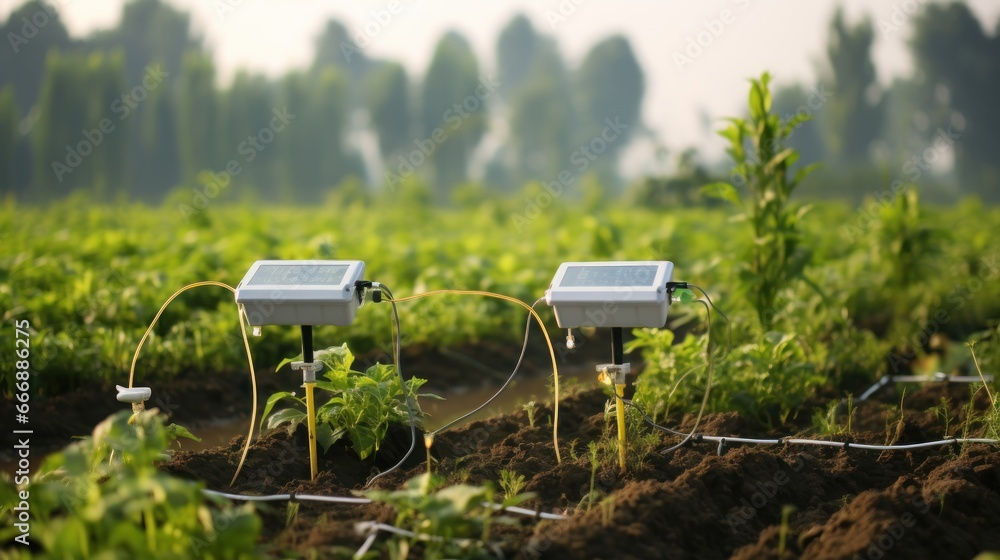
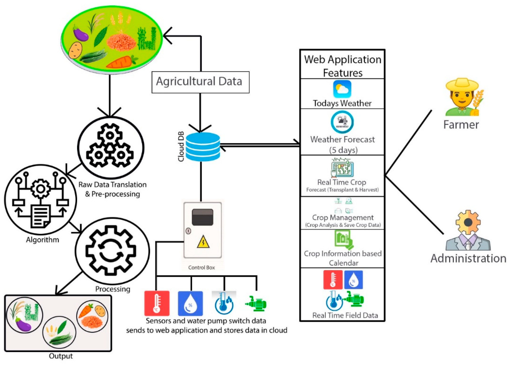

Why Choose Smart Crop Planning?
Data-Driven Insights
Leverage weather, soil, and crop history to make informed planting decisions.
Optimal Crop Selection
Identify the best crop for each field based on current and forecasted conditions.
Yield Optimisation
Improve production by aligning input, timing and crop type with predictive models.
Key Features
- Weather Forecast Integration: Real-time weather & forecast data guide planning.
- Soil & Region Analytics: Understand soil quality, crop-region compatibility & micro-climate.
- Visual Dashboard: See field suitability, risk areas & optimal planting windows at a glance.
- Automated Alerts: Get notified when conditions change so you can adjust your plan.
See It In Action



Ready to Get Started?
Sign up today to access your personalised crop planning dashboard and boost your farm’s productivity.
Get Started